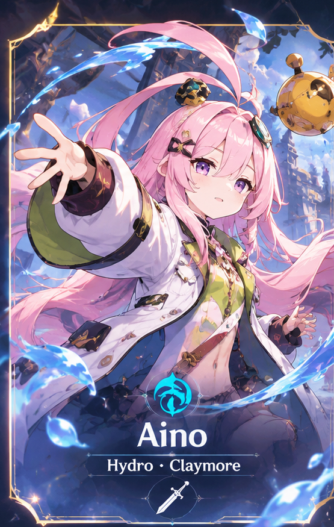
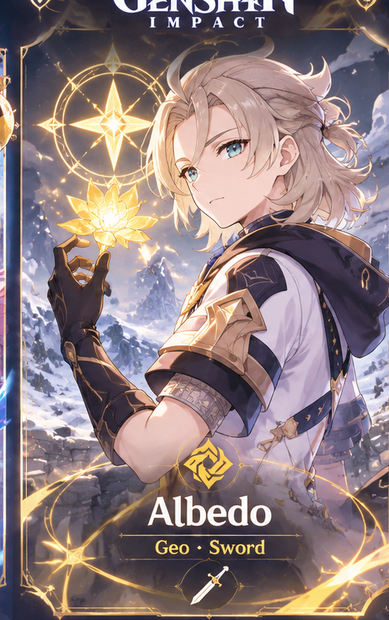
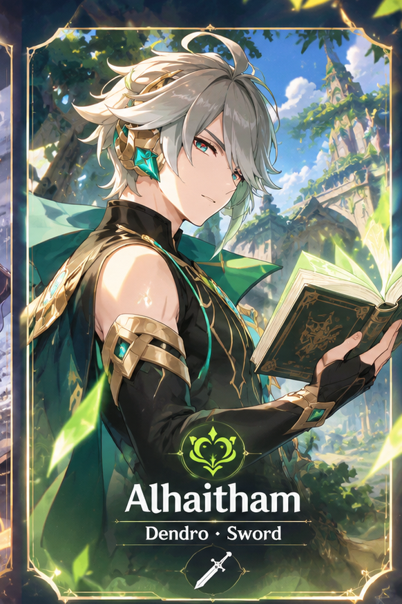

風
Mondstadt
ANEMO • FREEDOM
Салхины үндэстэн. Эрх чөлөө болон Анемо Архонттой холбоотой түүх.
Долоон үндэстэн, Архонууд, Эртний соёл иргэншил, Abyss болон Traveller-ийн аяллын нууцыг Монгол хэлээр хамтдаа судалцгаая.
Lore судлах →Долоон үндэстэн, долоон элементийн ертөнц.
Салхины үндэстэн. Эрх чөлөө болон Анемо Архонттой холбоотой түүх.
Гэрээ хэлцэл, Адептус болон Geo Архонтын тухай домог.
Мөнхийн үзэл санаа болон Electro Архонтын түүх.
Мэдлэг, Ирминсул болон Dendro Архонтын нууц.
Шударга ёс, шүүх ажиллагаа болон Hydro-ийн түүх.
Тулаан, овог аймгууд болон Pyro Архонтын тухай.
Тоглоомын түүх, нууцлаг үйл явдал болон онолууд.
Тэнгэрлэг зарчим, Архонууд болон Celestia-ийн тухай судалгаа.
Судлах →Бурхадгүй эртний улс болон сүйрлийн нууц.
Судлах →Алдагдсан ихэр, долоон үндэстэн болон аяллын гол зорилго.
Судлах →Тейватын долоон элементийн Архонууд, тэдний түүх болон эрх мэдлийн тухай.
Судлах →Дүрүүдийн түүх, гарал үүсэл болон холбоо хамаарал.

Дүрийн мэдээлэл болон Lore удахгүй нэмэгдэнэ.

Хиймэл хүн, алхими болон Khaenri'ah-тай холбоотой нууц.

Sumeru-ийн бичээч, мэдлэг болон Akademiya-тай холбоотой түүх.
Дүр, үндэстэн, Lore сэдвээр хайлт хийгээрэй.
Илэрц олдсонгүй.